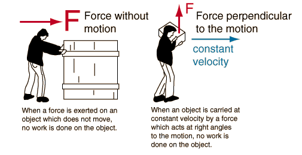

When a force does no work
A force with no motion or a force perpendicular to the motion does no work

These two examples of forces which do no work are paradoxical. You can certainly feel fatiqued when doing either of these, so how can you say that no work is done?
In the case at left, no matter how hard or how long you have pushed, if the crate does not move, then you have done no work on the crate. It is sitting still in the same place! Why then do you feel fatigued (as well as frustrated, etc. ). The resolution to this dilemma comes in considering that when your muscles are used to exert a force on something, the individual muscle fibers are in a continual process of contracting and releasing to maintain the net collective result of a steady force on an external object. That contracting and releasing involves force and motion, and constitutes internal work in your body. The energy shows up as warming in your muscle tissue, but if the crate doesn't move, there is still no net work on the crate.
The example at right is another standard paradox in the definition of work. If the box is being carried at constant velocity, then no net force is necessary to keep it in motion. The force exerted by the person is an upward force equal to the weight of the box, and that force is perpendicular to the motion. If there is no motion in the direction of the force, then no work in done by that force. Yet you certainly feel like you are doing work if you carry a heavy box. The resolution of the paradox is similar to the first example - your muscles must maintain an extra tension to stay upright under the load. This requires a greater amount of internal contraction and release of our muscle fibers, and hence internal work in our bodies. But the work done on the box is zero since by moving in a straight line at constant speed, it's energy is remaining the same.
There are many important examples of forces which do no work because they act perpendicular to the motion. For circular motion, the centripetal force always acts at right angles to the motion. It changes the direction of the motion, but it does no work on the object. This can be applied to any circular orbit.
|